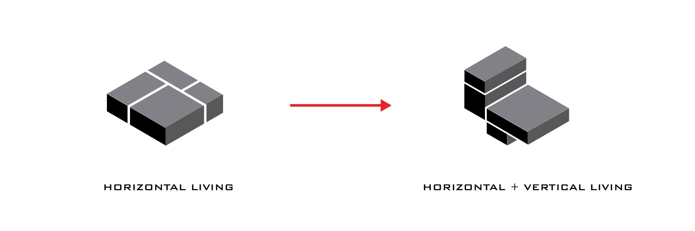
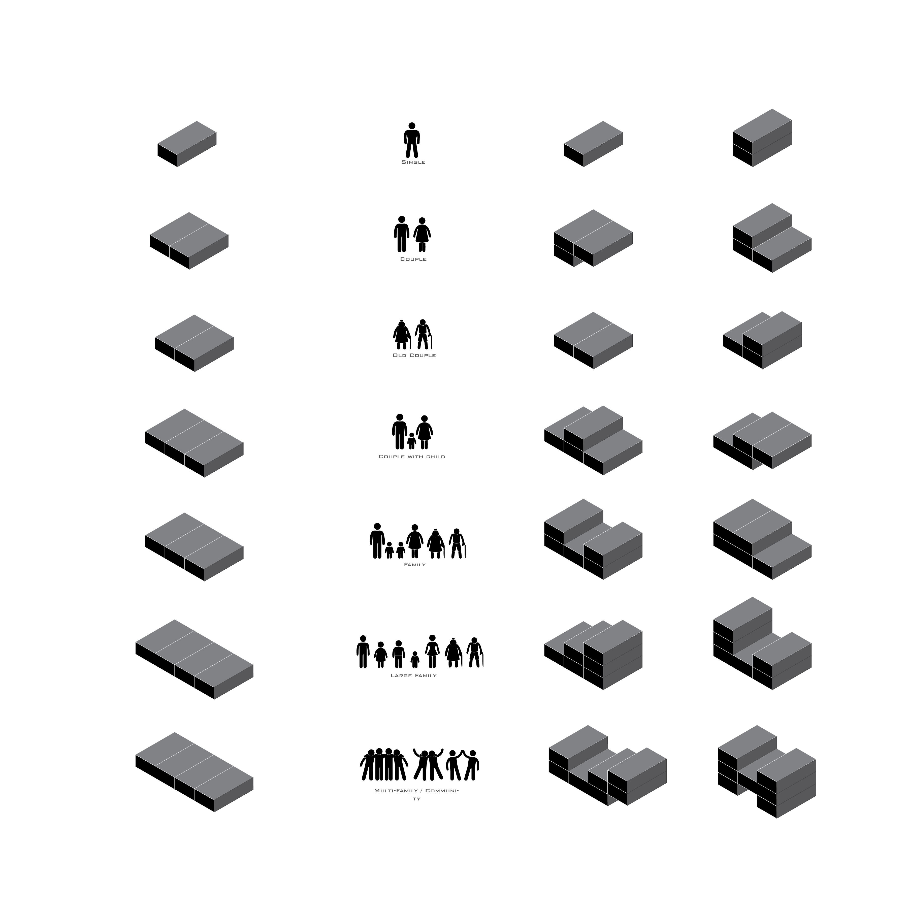
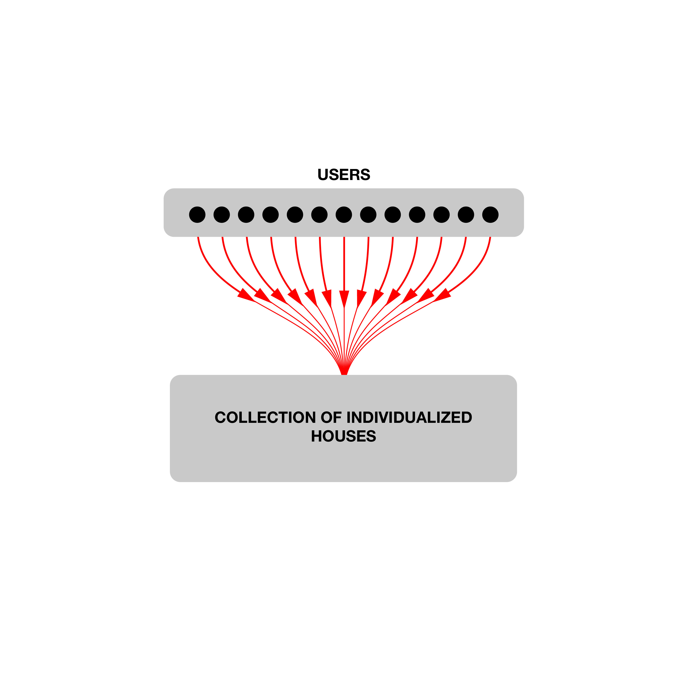
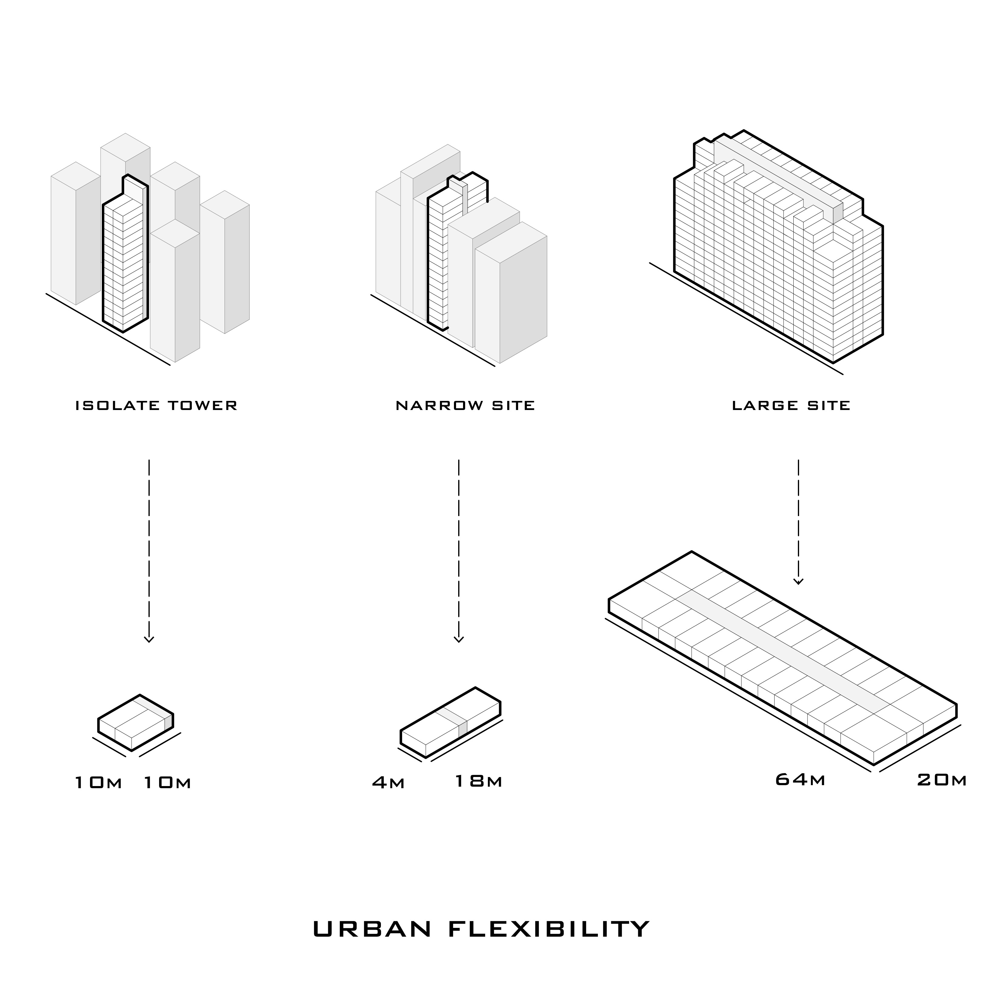
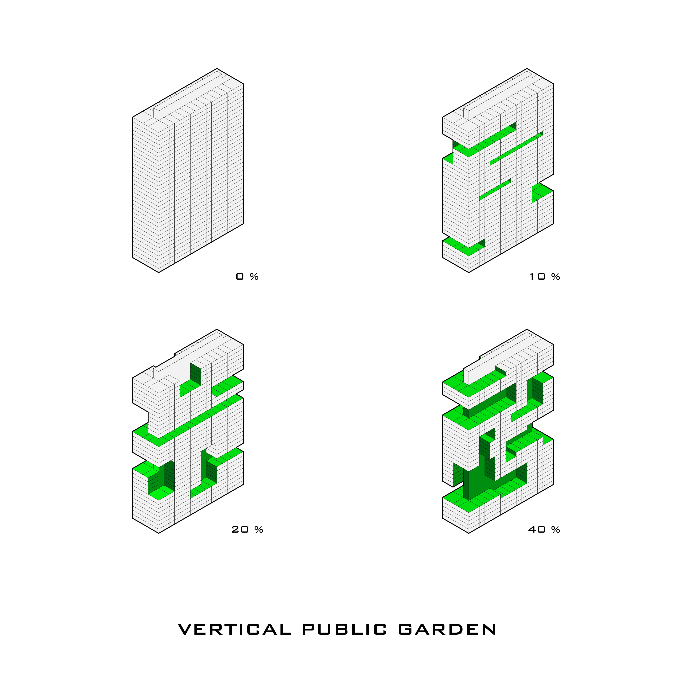
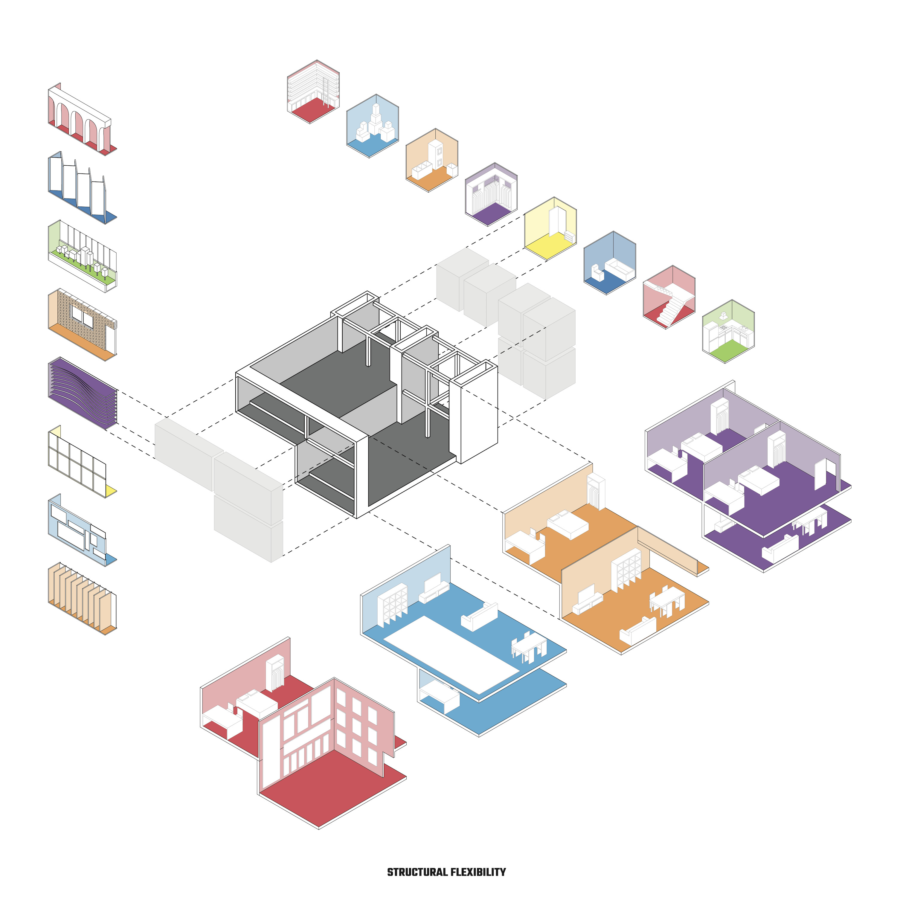
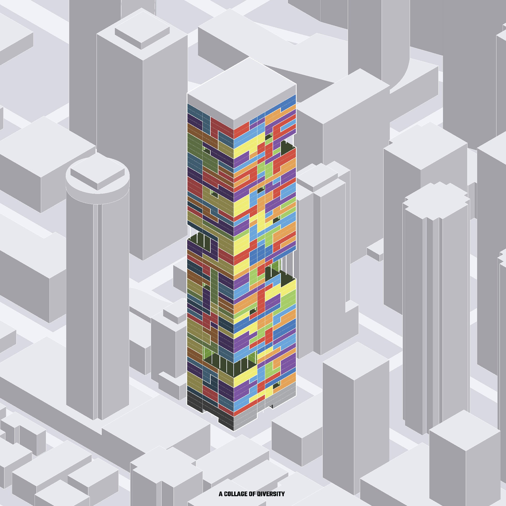

As the global population continuing shifting from rural area to the big cities, the high-density housing is becoming a more and more efficient mean to accommodate such drastic changes. A lot of current practices in high-rise housing design are highly focused on statistics such as number of units, floor-square-ratios, prices, etc. This can be seen from the potent of the homogeneous unit layouts, repeated floor plan with extrusion to the maximum height, uniformed exterior in most of the high-rise housing projects in cities like Vancouver as well as other cities around the world.
The qualities of life, however, are omitted and becomes the secondary priorities. Compare to the single home in rural area, the experience of the living space in most of the high-rise buildings are standardized and lacking diversities. One of this reason is caused by the developer-central- ized production mode and the lack of user involvement in the housing development process. In most scenarios, users only have the options to choose the finished units which may not suit their diversified needs.
The decentralized approach, on the other hand, provide a more responsive and participatory system to allow the users to directly interact within the design process and hence achieve the high level of responsiveness. Through the designing rules within and between each user groups, the pixel homes propose a decentralized system that based on “pixel” rules, each user can shape their own living space that define their needs, diversities, ambitions as well as their architectural identities.
      